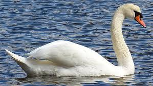

The
Swan
Species
The
Swan
Species
Common Name: Swans
Scientific Name: Cygnus
Type: Birds
Diet: Herbivore
Average life span in The Wild: Up to 30 years
Size: Up to 59 inches
Weight: Up to 33 pounds
The Swan is the largest waterfowl species of the subfamily Anserinae, family Anatidae (order
Anseriformes).
Most swans are classified in the genus Cygnus. Swans are gracefully long-necked,
heavy-bodied, big-footed birds
that glide majestically when swimming and fly with slow wingbeats and with
necks outstretched.
They migrate in diagonal formation or V-formation at great heights,
and no other
waterfowl moves as fast on the water or in the air.

Swans feed by dabbling (not diving) in shallows for aquatic plants.
Swimming or standing, the mute
(C. olor) and black (C. atratus) swans often tuck one foot over the back.
Male swans, called cobs, and
females, called pens, look alike
Legend to the contrary, swans utter a variety of sounds from the windpipe,
which in some species is looped within the breastbone (as in cranes);
even the mute swan, the least vocal
species, often hisses, makes soft snoring sounds, or grunts sharply.
Swans are sociable except in breeding season.
They mate for life. Courtship involves mutual bill
dipping or head-to-head posturing. The pen incubates, on average,
a half-dozen pale unmarked eggs on a heap
of vegetation while the cob keeps close guard; in some species he takes his turn at brooding.
After
repulsing an enemy, swans utter a triumph note, as geese do. The young, called cygnets, emerge short-necked and
thickly downed;
though capable of running and swimming a few hours after hatching, they are carefully tended
for several months;
in some species they may ride about on their mother’s back.
Immature birds wear
mottled gray or brown plumage for two or more years.
Swans mature in the third or fourth year and live
perhaps 20 years in the wild and 50 years or more in captivity.
Read more about swans on here
https://en.wikipedia.org/wiki/Swan